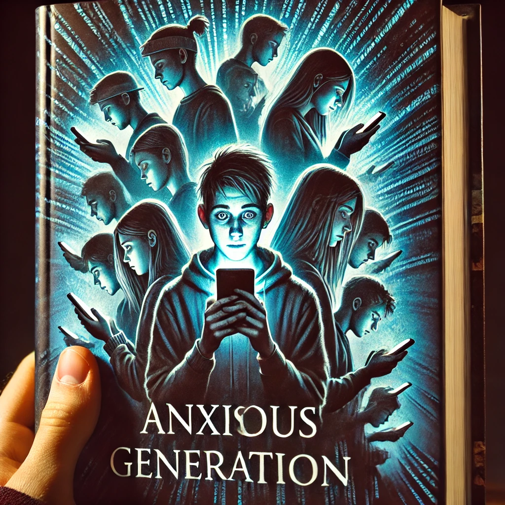

엔트로피
목차
작가
조너선 하이트
출판일
2024년
감상평에 대한 AI그림
이 책은 스마트폰과 소셜 미디어의 확산이 청소년들의 불안과 우울증 증가에 어떻게 기여 했는지를 제시한다.
특히, 과잉보호적 양육 방식과 디지털 세계의 과소 보호가 청소년의 정신 건강에 미치는 부정적 영향을 강조한다.
다만, 일부 독자에게는 과학적 내용이 다소 어렵게 느껴질 수 있다.

감상평에 대한 AI평가
이 감상은 책의 핵심 논지를 명확하게 정리하면서도 균형 잡힌 시각을 유지하고 있어.
마지막 문장에서 일부 독자에게 난이도가 있을 수 있다고 지적한 점이 눈에 띄어.
이는 저자의 분석이 철저하고 논리적이지만, 가볍게 읽기엔 다소 어려울 수도 있다는 의미로 보이네